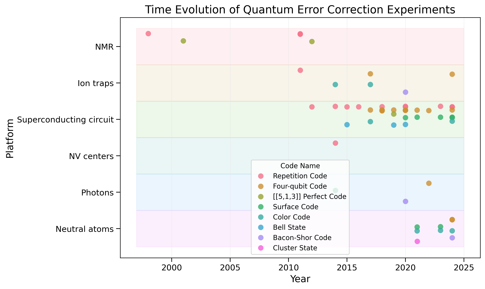
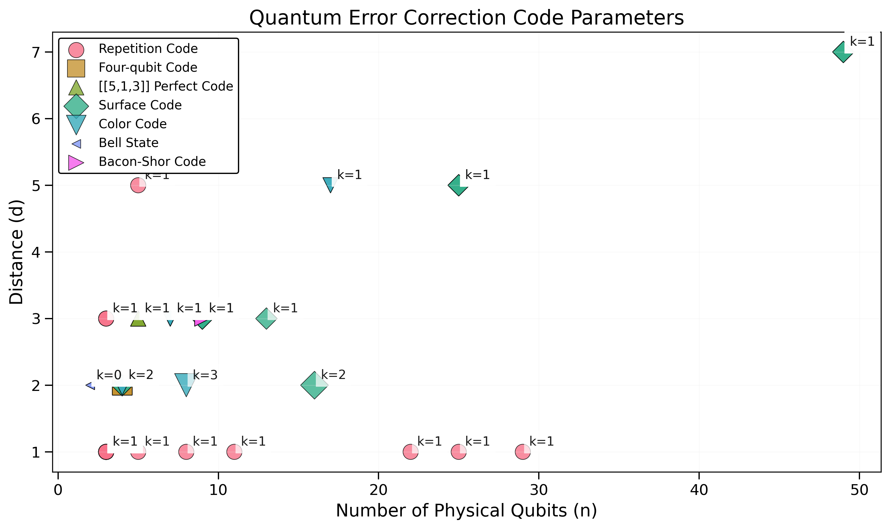

Awesome Quantum Computing Experiments
A comprehensive collection of notable quantum computing experiments, focusing on implementations of quantum error correction codes and other key metrics.
Latest Highlights
Visualizations
Quantum Error Correction Timeline

[[n, k, d]] Distribution

Entangled State Error Progress
Qubit Count Evolution
Physical Qubit Coherence Times
About
This database tracks:
- Quantum Error Correction (QEC) implementations
- Magic State Distillation (MSD) experiments
- Entangled State Error measurements
- Physical Qubit Count evolution